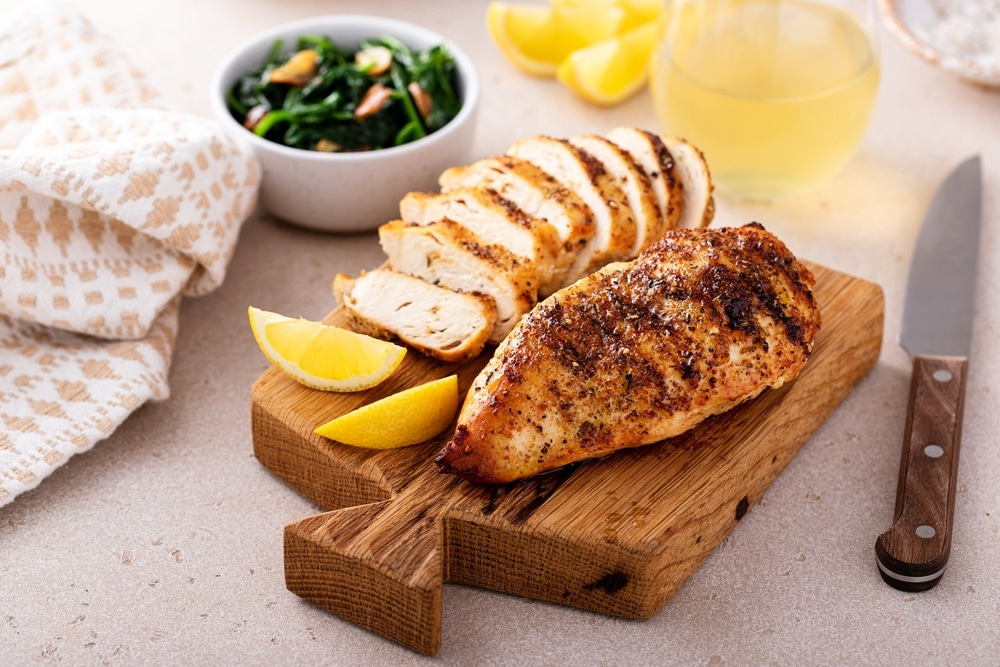
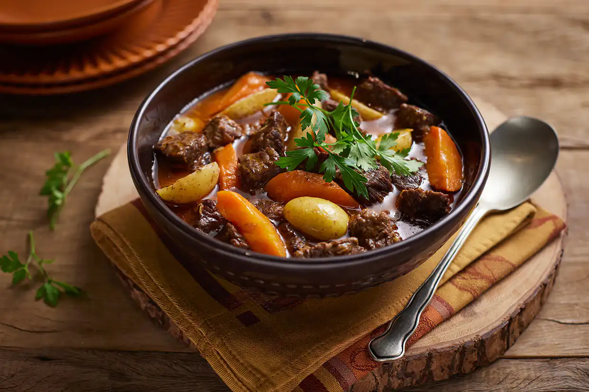
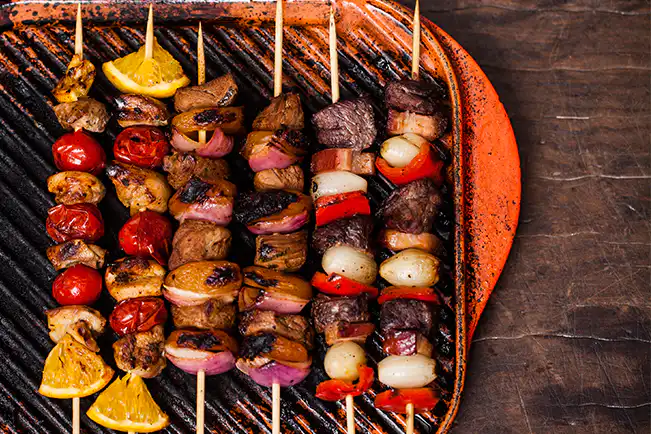
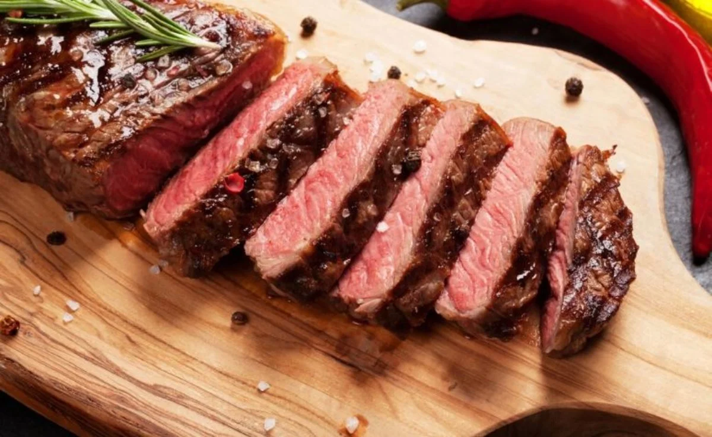

Picanha do Lula
Uma deliciosa picanha grelhada com tempero especial, perfeita para um churrasco!
Ingredientes e modo de preparo:
- 1 peça de picanha (aproximadamente 1 kg)
- Sal grosso a gosto
- Pimenta-do-reino a gosto
- 4 dentes de alho picados
- 1/4 de xícara de azeite de oliva
- 1 raminho de alecrim (opcional)
- Limão para servir
- Retire a picanha da geladeira e deixe em temperatura ambiente por 30 minutos.
- Em uma tigela, misture o azeite, alho, sal e pimenta, e tempere a picanha.
- Preaqueça a churrasqueira em fogo alto e grelhe a picanha com a gordura para cima por 10-15 minutos.
- Vire a picanha e grelhe por mais 10-15 minutos, conforme o ponto desejado.
- Deixe descansar por 10 minutos antes de cortar.
- Corte em fatias e sirva com limão espremido.

Frango Grelhado com Limão
Frango marinado e grelhado, perfeito para um almoço leve e saboroso.
Ingredientes e modo de preparo:
- 4 filés de peito de frango
- 2 limões (suco e raspas)
- 2 dentes de alho picados
- 1 colher de sopa de azeite
- Sal e pimenta a gosto
- Em uma tigela, misture o suco de limão, raspas, alho, azeite, sal e pimenta.
- Coloque os filés na marinada e deixe por pelo menos 30 minutos.
- Grelhe os filés em uma frigideira quente por 6-7 minutos de cada lado.
- Sirva com salada ou legumes grelhados.

Carne de Panela
Uma receita caseira, ideal para o almoço de domingo.
Ingredientes e modo de preparo:
- 1 kg de carne de segunda cortada em cubos
- 2 cenouras em rodelas
- 1 cebola picada
- 2 dentes de alho picados
- 4 xícaras de caldo de carne
- Sal e pimenta a gosto
- Em uma panela de pressão, aqueça um pouco de óleo e doure a carne.
- Adicione a cebola e o alho, refogando até ficarem macios.
- Coloque as cenouras, o caldo de carne, sal e pimenta.
- Cozinhe na pressão por cerca de 30 minutos.
- Deixe sair a pressão, verifique o tempero e sirva com arroz.

Espetinho de Carne
Espetinhos deliciosos, ideais para um lanche ou reunião.
Ingredientes e modo de preparo:
- 500g de carne bovina em cubos
- 1 cebola cortada em pedaços
- 1 pimentão cortado em pedaços
- Sal, pimenta e temperos a gosto
- Palitos de churrasco
- Tempere a carne com sal, pimenta e seus temperos favoritos.
- Monte os espetinhos alternando carne, cebola e pimentão.
- Grelhe em fogo médio por 10-15 minutos, virando para assar por igual.
- Sirva com molho de sua preferência.

Bife Ancho
Um bife suculento, ideal para um jantar especial.
Ingredientes e modo de preparo:
- 2 bifes ancho de aproximadamente 300g cada
- Sal e pimenta a gosto
- 2 colheres de sopa de manteiga
- 1 raminho de alecrim
- Tempere os bifes com sal e pimenta.
- Em uma frigideira quente, derreta a manteiga e adicione o alecrim.
- Grelhe os bifes por 4-5 minutos de cada lado, para mal passado.
- Deixe descansar antes de servir.